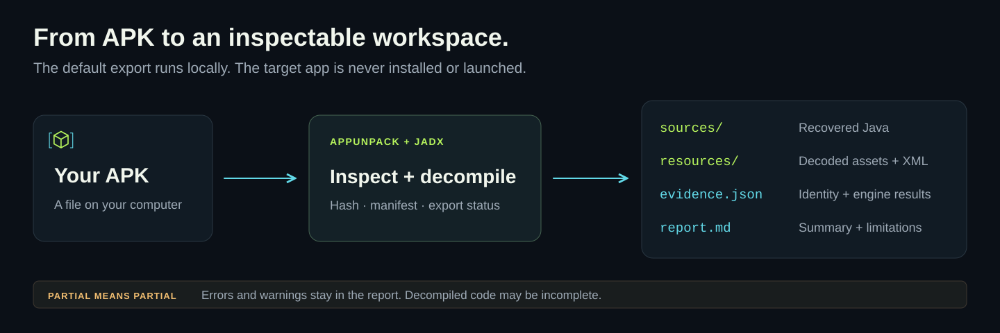
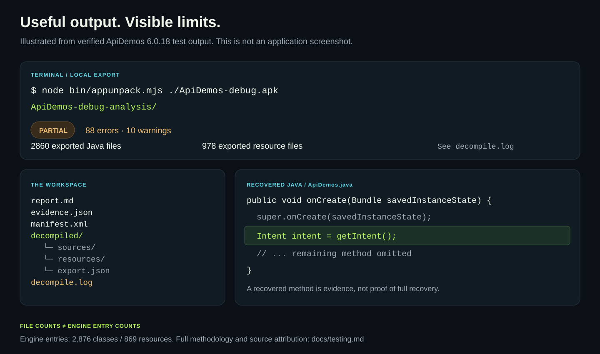

Read the recovered code
Export reconstructed Java and search classes, methods and references. Follow the implementation behind a feature.
OPEN SOURCE · LOCAL ANALYSIS · MIT
Give AppUnpack an APK. Get readable Java, decoded resources and a report that keeps the evidence and its limits together.
Runs on your computer. No AI account required.
$ node bin/appunpack.mjs Example.apk
Decompiling APK…
↳ Example-analysis/
01 / THE WORKFLOW
AppUnpack calls the established JADX engine and saves the results in a new folder. Your APK is processed without installing or launching the app.

Export reconstructed Java and search classes, methods and references. Follow the implementation behind a feature.
Browse decoded resources and manifest declarations. Keep the package identity, permissions and observed metadata.
Every report retains the input SHA-256, engine identity and diagnostics. Existing output directories are preserved.
02 / VERIFIED OUTPUT
Public fixtures, NetGuard and Mullvad releases, Jellyfin release-derived split APKs and Android Frida were checked on Windows. Exports retain partial status and diagnostics. See the verification record for exact coverage.

These are derived files, not the original project. Decompiled methods can be incomplete or inaccurate. The illustration above summarizes a real test; it is not a product GUI.
Read the verification record03 / QUICK START
Install Node.js 24.11+, npm, Git and a Java 17+ JDK with compiler modules. Python 3.10+ is optional for IPA metadata.
git clone https://github.com/samalyxx/appunpack.git
cd appunpack
npm ci
node bin/appunpack.mjs install-tools
node bin/appunpack.mjs ./Example.apkThe engine download is pinned and SHA-256 verified. Replace Example.apk with your APK's path.
.\appunpack.ps1 'C:\Apps\Example.apk'Open Example-analysis/report.md beside your APK, then explore its decompiled folder.
An existing analysis folder is never overwritten. Choose a new destination with --output.
OPTIONAL / AI CODING AGENTS
Connect a compatible MCP client to inspect classes, methods and references. Keep the APK hash and distinguish returned evidence from the agent's interpretation.
Connect your agentPRINT YOUR LOCAL MCP CONFIGURATION
node bin/appunpack.mjs mcp-config“Find the search implementation in this APK. Trace its callers and explain the behavior with evidence and limitations.”
A cloud AI client can receive the tool output it requests under that client's own data policy.
04 / COVERAGE
Static APK reverse engineering is a starting point for investigation. AppUnpack makes the boundaries visible.
| Target or workflow | Current support | What to expect |
|---|---|---|
| Android APK | Supported | Derived Java, decoded resources, manifest, evidence and report. |
| Class / method investigation | Supported | CLI queries and optional stdio MCP integration through JADX. |
| iOS IPA | Metadata only | Archive and bundle plist inventory; no executable decompilation. |
| Split APK sets | Supported | Compatible base/split sets analyzed together; per-part resources retained. No installable merged APK. |
| Apktool / Ghidra | Optional tools | Smali/resource decoding and selected native ELF pseudocode. Separate tool setup required. |
| ADB / Frida | Optional tools | Package extraction, bounded device logs and explicit process/script captures. |
05 / COMMON QUESTIONS
AppUnpack uses JADX's decompiler API to load APK bytecode and save reconstructed Java and decoded resources. It adds a local command, evidence reports and optional agent integration. It does not implement a new decompiler.
No. Obfuscation, unsupported constructs, native libraries and missing modules can leave gaps. Even output without reported errors is not proof of correct source recovery. The original source project and server-side backend cannot be recovered from an APK.
The default export runs on your computer. No AI account is required. Setup downloads dependencies and the engine; it does not upload your APK. If you connect a cloud AI client, tool responses follow that client's data policy.
Provide an actual APK file that you are authorized to analyze. AppUnpack does not download apps by name or merge Play Store split APKs. A lone base APK may omit code and resources.
The engine reported errors or warnings. Useful files may still exist. Review the counters, affected source files and decompile.log before relying on a result.
No. This website explains the tool and links to its source release. Analysis happens in your local CLI; there is no APK upload form or hosted analysis service.
OPEN SOURCE / MIT LICENSE